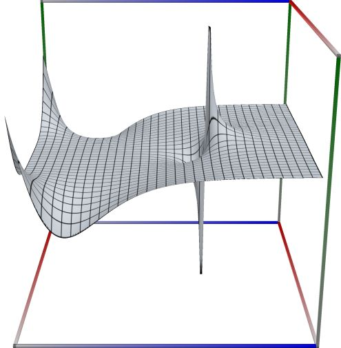
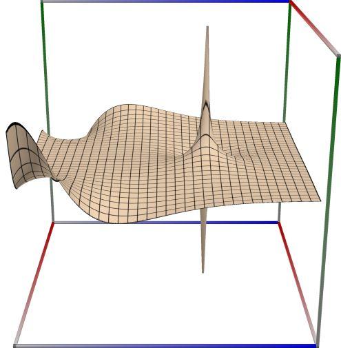
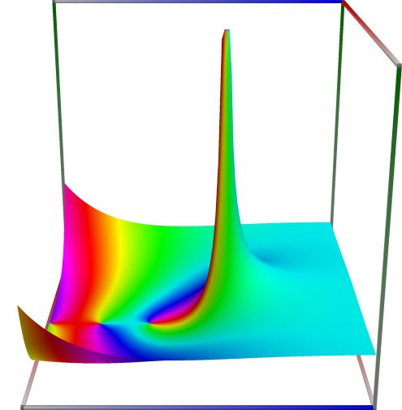
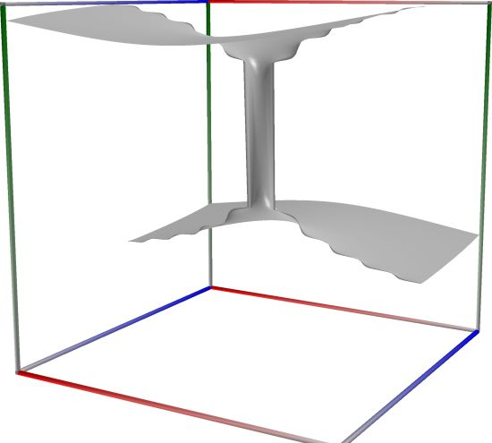
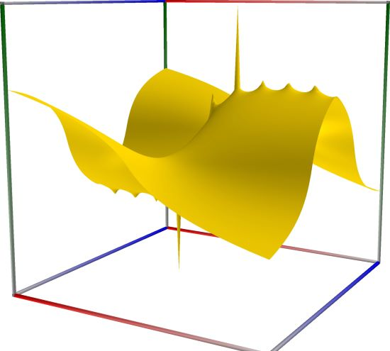
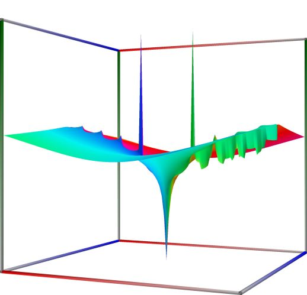
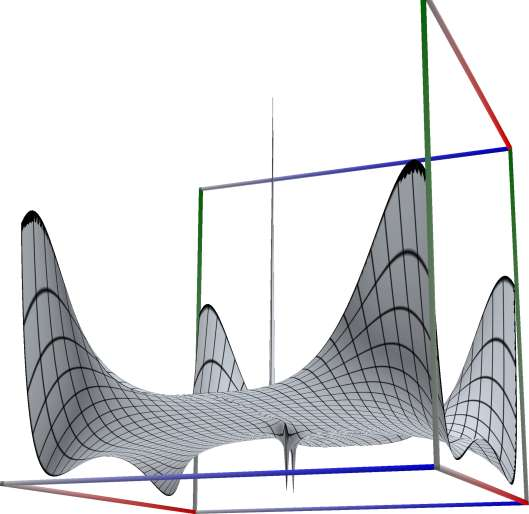
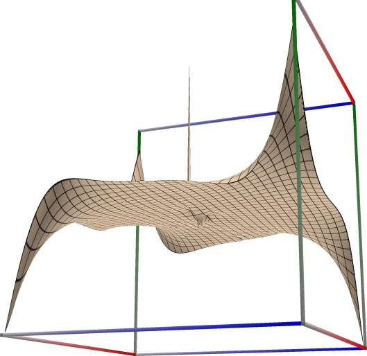
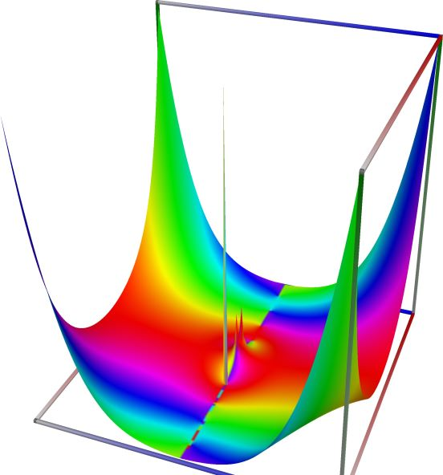

Riemann zeta function, and related functions#
Riemann zeta function, \(\zeta(s)\)#
- ctx.zeta(s)#
where
ctxismath53,mathc53,ctxboostctxflint.Returns the Riemann zeta function, defined as \(\displaystyle \zeta(s) = \sum_{k=1}^{\infty} \frac{1}{k^s}\) for \(s>1\), and by analytic continuation for \(s \ne 1\).
See also Wikipedia [1328], MathWorld [965], NIST [19], BoostMath [158], Ehrhardt [295] (3.6.1.1), Ehrhardt [295] (4.2.63), Flint [759], Mpmath [658].

\(\quad\)
\(\quad\)
3D wpf plot: real part (left figure), imaginary part (middle figure) and absolute value with color-coded phase (right figure) of the complex sine function \(z = \sin(x + iy)\), with \(-6 \le x \le 6\) (blue axis), \(-6 \le y \le 6\) (red axis), \(-10 \le z \le 10\) (green axis). Function values are loglog-transformed.
An example with real input:
>>> from xlcalcnet import * >>> s = -5.1; gui.setdps(90) >>> for ctx in gui.ctxlist_noipm_real: print(ctx.fmtname + ': ' + ctx.fmt(ctx.zeta(s))) fpm: -0.00386687567958226 mpm: -0.00386687567958226052487833515638707891669309861271450469655760220949065254885860931178398183 dpm: -0.00386687567958226052487833515638707891669309861271450469655760220949065254885860931178398183 gpm: -0.0038668756795822605248783351563870789166930986127145046965576022094906525488586093117839818299 apm: [-0.0038668756795822605248783351563870789166930986127145046965576022094906525488586093117839818 +/- 4.41e-92] math53: -0.00386687567958226 sreal: -0.003866876 dreal: -0.00386687567958227 ereal: -0.003866875679582260521 qreal: -0.00386687567958226052487833515638708 oreal: -0.0038668756795822605248783351563870789166930986127145046965576022094906512 mreal: -0.00386687567958226052487833515638707891669309861271450469655760220949065254885860931178398162 sflint: -0.003866876 dflint: -0.00386687567958226 eflint: -0.0038668756795822605251 qflint: -0.00386687567958226052487833515638708 oflint: -0.0038668756795822605248783351563870789166930986127145046965576022094906526 mflint: -0.00386687567958226052487833515638707891669309861271450469655760220949065254885860931178398183 aflint: [-0.0038668756795822605248783351563870789166930986127145046965576022094906525488586093117839818 +/- 4.44e-92]
An example with complex input, using C#-style formatting for complex numbers for the result
>>> from xlcalcnet import * >>> s = -5.1+2j; gui.setdps(40) >>> for ctx in [fpm, mpm, cmath53]: print(ctx.fmtname + ': ' + ctx.fmt(ctx.zeta(s))) fpm: (-0.0295478909669659, -0.0110797461302298) mpm: (-0.02954789096696594213008040833926196457193, -0.01107974613022983077508489222134709926827) cmath53: (-0.0295478909669659, -0.0110797461302298)
An example with the same complex input as above, showing only the real part of the result:
>>> from xlcalcnet import * >>> s = -5.1+2j; gui.setdps(90) >>> for ctx in gui.ctxlist_noboost_cplx: ... print(ctx.fmtname + ': ' + ctx.realctx.fmt(ctx.real(ctx.zeta(s)))) fpm: -0.0295478909669659 mpm: -0.0295478909669659421300804083392619645719347351053967517857337391819460126200193668824402534 dpm: -0.0295478909669659421300804083392619645719347351053967517857337391819460126200193668824402534 gpm: -0.029547890966965942130080408339261964571934735105396751785733739181946012620019366882440253399 apm: [-0.029547890966965942130080408339261964571934735105396751785733739181946012620019366882440253 +/- 7.29e-91] cmath53: -0.0295478909669659 sflintc: -0.02954789 dflintc: -0.0295478909669659 eflintc: -0.029547890966965942132 qflintc: -0.029547890966965942130080408339262 oflintc: -0.029547890966965942130080408339261964571934735105396751785733739181946013 mflintc: -0.0295478909669659421300804083392619645719347351053967517857337391819460126200193668824402534 aflintc: [-0.029547890966965942130080408339261964571934735105396751785733739181946012620019366882440253 +/- 6.81e-91]
An example with the same complex input as above, showing only the imaginary part of the result:
>>> from xlcalcnet import * >>> s = -5.1+2j; gui.setdps(90) >>> for ctx in gui.ctxlist_noboost_cplx: ... print(ctx.fmtname + ': ' + ctx.realctx.fmt(ctx.imag(ctx.zeta(s)))) fpm: -0.0110797461302298 mpm: -0.0110797461302298307750848922213470992682670836150023169522980609759044643855765224746187561 dpm: -0.0110797461302298307750848922213470992682670836150023169522980609759044643855765224746187561 gpm: -0.011079746130229830775084892221347099268267083615002316952298060975904464385576522474618756101 apm: [-0.011079746130229830775084892221347099268267083615002316952298060975904464385576522474618756 +/- 4.61e-91] cmath53: -0.0110797461302298 sflintc: -0.01107974 dflintc: -0.0110797461302298 eflintc: -0.011079746130229830772 qflintc: -0.0110797461302298307750848922213471 oflintc: -0.011079746130229830775084892221347099268267083615002316952298060975904464 mflintc: -0.0110797461302298307750848922213470992682670836150023169522980609759044643855765224746187561 aflintc: [-0.011079746130229830775084892221347099268267083615002316952298060975904464385576522474618756 +/- 4.15e-91]
The above and additional examples can be found online in the
DataXlCalcNetrepository or in the corresponding localDataXlCalcNetfolder for Python (real input), Python (complex input), and C# (real or complex input).


Riemann \(\zeta(s)-1\)#
- ctx.zetam1(s)#
Returns the Riemann function \(\zeta(s)-1 = \zeta(s, 2)\) for \(s \ne 1\).
See also Wikipedia [1328], MathWorld [965], NIST [19], BoostMath [158], Ehrhardt [295] (3.6.1.4).
An example with real input:
>>> from xlcalcnet import * >>> s = -5.1; gui.setdps(90) >>> for ctx in gui.ctxlist_noboost_real: print(ctx.fmtname + ': ' + ctx.fmt(ctx.zetam1(s))) fpm: -1.00386687567958 mpm: -1.00386687567958226052487833515638707891669309861271450469655760220949065254885860931178398 dpm: -1.00386687567958226052487833515638707891669309861271450469655760220949065254885860931178398 gpm: -1.0038668756795822605248783351563870789166930986127145046965576022094906525488586093117839801 apm: [-1.0038668756795822605248783351563870789166930986127145046965576022094906525488586 +/- 3.85e-80] math53: -1.00386687567958 sflint: -1.003867 dflint: -1.00386687567958 eflint: -1.0038668756795822606 qflint: -1.00386687567958226052487833515639 oflint: -1.003866875679582260524878335156387078916693098612714504696557602209491 mflint: -1.00386687567958226052487833515638707891669309861271450469655760220949065254885860931377103 aflint: [-1.0038668756795822605248783351563870789166930986127145046965576022094906525488586 +/- 3.27e-80]
An example with complex input, using C#-style formatting for complex numbers for the result
>>> from xlcalcnet import * >>> s = -5.1+2j; gui.setdps(40) >>> for ctx in [fpm, mpm, cmath53]: print(ctx.fmtname + ': ' + ctx.fmt(ctx.zetam1(s))) fpm: (-1.02954789096697, -0.0110797461302298) mpm: (-1.029547890966965942130080408339261964572, -0.01107974613022983077508489222134709926827) cmath53: (-1.02954789096697, -0.0110797461302298)
An example with the same complex input as above, showing only the real part of the result:
>>> from xlcalcnet import * >>> s = -5.1+2j; gui.setdps(90) >>> for ctx in gui.ctxlist_noboost_cplx: ... print(ctx.fmtname + ': ' + ctx.realctx.fmt(ctx.real(ctx.zetam1(s)))) fpm: -1.02954789096697 mpm: -1.02954789096696594213008040833926196457193473510539675178573373918194601262001936688244025 dpm: -1.02954789096696594213008040833926196457193473510539675178573373918194601262001936688244025 gpm: -1.0295478909669659421300804083392619645719347351053967517857337391819460126200193668824402501 apm: [-1.0295478909669659421300804083392619645719347351053967517857337391819460126200194 +/- 4.83e-80] cmath53: -1.02954789096697 sflintc: -1.029548 dflintc: -1.02954789096697 eflintc: -1.0295478909669659422 qflintc: -1.02954789096696594213008040833926 oflintc: -1.029547890966965942130080408339261964571934735105396751785733739181946 mflintc: -1.02954789096696594213008040833926196457193473510539675178573373918194601262001936688294277 aflintc: [-1.0295478909669659421300804083392619645719347351053967517857337391819460126200194 +/- 4.07e-80]
An example with the same complex input as above, showing only the imaginary part of the result:
>>> from xlcalcnet import * >>> s = -5.1+2j; gui.setdps(90) >>> for ctx in gui.ctxlist_noboost_cplx: ... print(ctx.fmtname + ': ' + ctx.realctx.fmt(ctx.imag(ctx.zetam1(s)))) fpm: -0.0110797461302298 mpm: -0.0110797461302298307750848922213470992682670836150023169522980609759044643855765224746187561 dpm: -0.0110797461302298307750848922213470992682670836150023169522980609759044643855765224746187561 gpm: -0.011079746130229830775084892221347099268267083615002316952298060975904464385576522474618756101 apm: [-0.0110797461302298307750848922213470992682670836150023169522980609759044643855765 +/- 6.70e-80] cmath53: -0.0110797461302298 sflintc: -0.01107976 dflintc: -0.0110797461302298 eflintc: -0.011079746130229830772 qflintc: -0.0110797461302298307750848922213471 oflintc: -0.011079746130229830775084892221347099268267083615002316952298060975904 mflintc: -0.0110797461302298307750848922213470992682670836150023169522980609759044643855765224732164553 aflintc: [-0.0110797461302298307750848922213470992682670836150023169522980609759044643855765 +/- 4.37e-80]
The above and additional examples can be found online in the
DataXlCalcNetrepository or in the corresponding localDataXlCalcNetfolder for Python (real input), Python (complex input), and C# (real or complex input).
Hardy (or Riemann-Siegel) theta function#
- mathc53.hardy_theta(z)#
Returns the Hardy (or Riemann-Siegel) theta function. See also Wikipedia [1356], MathWorld [1011], Ehrhardt [295] (4.2.52), Mpmath [692] Mpmath [698].
\[\theta(t) = \frac{ \log\Gamma\left(\frac{1+2it}{4}\right) - \log\Gamma\left(\frac{1-2it}{4}\right) }{2i} - \frac{\log \pi}{2} t.\]
\(\quad\)
\(\quad\)
3D wpf plot: real part (left figure), imaginary part (middle figure) and absolute value with color-coded phase (right figure) of the complex sine function \(z = \sin(x + iy)\), with \(-6 \le x \le 6\) (blue axis), \(-6 \le y \le 6\) (red axis), \(-10 \le z \le 10\) (green axis). Function values are loglog-transformed.
An example with real input:
>>> from xlcalcnet import * >>> t = -5.1; gui.setdps(90) >>> for ctx in gui.ctxlist_noboost_real: print(ctx.fmtname + ': ' + ctx.fmt(ctx.hardy_theta(t))) fpm: -1.00386687567958 mpm: -1.00386687567958226052487833515638707891669309861271450469655760220949065254885860931178398 dpm: -1.00386687567958226052487833515638707891669309861271450469655760220949065254885860931178398 gpm: -1.0038668756795822605248783351563870789166930986127145046965576022094906525488586093117839801 apm: [-1.0038668756795822605248783351563870789166930986127145046965576022094906525488586 +/- 3.85e-80] math53: -1.00386687567958 sflint: -1.003867 dflint: -1.00386687567958 eflint: -1.0038668756795822606 qflint: -1.00386687567958226052487833515639 oflint: -1.003866875679582260524878335156387078916693098612714504696557602209491 mflint: -1.00386687567958226052487833515638707891669309861271450469655760220949065254885860931377103 aflint: [-1.0038668756795822605248783351563870789166930986127145046965576022094906525488586 +/- 3.27e-80]
An example with complex input, using C#-style formatting for complex numbers for the result
>>> from xlcalcnet import * >>> t = -5.1+2j; gui.setdps(40) >>> for ctx in [fpm, mpm, cmath53]: print(ctx.fmtname + ': ' + ctx.fmt(ctx.hardy_theta(t))) fpm: (3.66251710053645, -0.185503504876588) mpm: (3.662517100536445816224427792355338662896, -0.1855035048765876060818795120848025983528) cmath53: (3.66251710053644, -0.185503504876587)
An example with the same complex input as above, showing only the real part of the result:
>>> from xlcalcnet import * >>> t = -5.1+2j; gui.setdps(40) >>> for ctx in gui.ctxlist_noboost_cplx: ... print(ctx.fmtname + ': ' + ctx.realctx.fmt(ctx.real(ctx.hardy_theta(t)))) fpm: 3.66251710053645 mpm: 3.66251710053644581622442779235533866289576309155572331942073302627152676249157563161122187 dpm: 3.66251710053644581622442779235533866289576309155572331942073302627152676249157563161122187 gpm: 3.6625171005364458162244277923553386628957630915557233194207330262715267624915756316112218699 apm: [3.66251710053644581622442779235533866289576309155572331942073302627152676249157563161122187 +/- 7.00e-90] cmath53: 3.66251710053644 sflintc: 3.662517 dflintc: 3.66251710053645 eflintc: 3.6625171005364458162 qflintc: 3.66251710053644581622442779235534 oflintc: 3.6625171005364458162244277923553386628957630915557233194207330262715268 mflintc: 3.66251710053644581622442779235533866289576309155572331942073302627152676249157563161122187 aflintc: [3.6625171005364458162244277923553386628957630915557233194207330262715267624915756316112219 +/- 4.68e-89]
An example with the same complex input as above, showing only the imaginary part of the result:
>>> from xlcalcnet import * >>> t = -5.1+2j; gui.setdps(90) >>> for ctx in gui.ctxlist_noboost_cplx: ... print(ctx.fmtname + ': ' + ctx.realctx.fmt(ctx.imag(ctx.hardy_theta(t)))) fpm: -0.185503504876588 mpm: -0.185503504876587606081879512084802598352802549107471893170319592843359519106002517204303128 dpm: -0.185503504876587606081879512084802598352802549107471893170319592843359519106002517204303128 gpm: -0.18550350487658760608187951208480259835280254910747189317031959284335951910600251720430312801 apm: [-0.18550350487658760608187951208480259835280254910747189317031959284335951910600251720430313 +/- 6.47e-90] cmath53: -0.185503504876587 sflintc: -0.1855035 dflintc: -0.185503504876588 eflintc: -0.1855035048765876061 qflintc: -0.185503504876587606081879512084803 oflintc: -0.18550350487658760608187951208480259835280254910747189317031959284335952 mflintc: -0.185503504876587606081879512084802598352802549107471893170319592843359519106002517204303129 aflintc: [-0.1855035048765876060818795120848025983528025491074718931703195928433595191060025172043031 +/- 3.88e-89]
The above and additional examples can be found online in the
DataXlCalcNetrepository or in the corresponding localDataXlCalcNetfolder for Python (real input), Python (complex input), and C# (real or complex input).


Hardy (or Riemann-Siegel) Z function#
- mathc53.hardy_z(z)#
Returns the Hardy (or Riemann-Siegel) Z function. See also Wikipedia [1355], MathWorld [1012], NIST [13], Flint [763], Ehrhardt [295] (4.2.52), Mpmath [697].
\[Z(t) = e^{i \theta(t)} \zeta(1/2+it)\]where \(\zeta(s)\) is the Riemann zeta function and \(\theta(t)\) denotes the Riemann-Siegel theta function.
This calls
acb_dirichlet_hardy_z.Computes the Z-function, also known as the Riemann-Siegel Z function,
\[Z(t) = e^{i \theta(t)} \zeta(1/2+it)\]where \(\zeta(s)\) is the Riemann zeta function (zeta()) and where \(\theta(t)\) denotes the Riemann-Siegel theta function (see siegeltheta()).

\(\quad\)
\(\quad\)
3D wpf plot: real part (left figure), imaginary part (middle figure) and absolute value with color-coded phase (right figure) of the complex sine function \(z = \sin(x + iy)\), with \(-6 \le x \le 6\) (blue axis), \(-6 \le y \le 6\) (red axis), \(-10 \le z \le 10\) (green axis). Function values are loglog-transformed.
An example with real input:
>>> from xlcalcnet import * >>> t = -5.1; gui.setdps(90) >>> for ctx in gui.ctxlist_noboost_real: print(ctx.fmtname + ': ' + ctx.fmt(ctx.hardy_z(t))) fpm: -0.753729185451756 mpm: -0.753729185451756037768888278524587430486657146484138138070418202328823445459246011029483176 dpm: -0.753729185451756037768888278524587430486657146484138138070418202328823445459246011029483176 gpm: -0.75372918545175603776888827852458743048665714648413813807041820232882344545924601102948317605 apm: [-0.7537291854517560377688882785245874304866571464841381380704182023288234454592460110294832 +/- 6.01e-89] math53: -0.753729185451755 sflint: -0.7537292 dflint: -0.753729185451756 eflint: -0.75372918545175603773 qflint: -0.753729185451756037768888278524587 oflint: -0.75372918545175603776888827852458743048665714648413813807041820232882344 mflint: -0.753729185451756037768888278524587430486657146484138138070418202328823445459246011029483175 aflint: [-0.7537291854517560377688882785245874304866571464841381380704182023288234454592460110294832 +/- 5.69e-89]
An example with complex input, using C#-style formatting for complex numbers for the result
>>> from xlcalcnet import * >>> t = -5.1+2j; gui.setdps(40) >>> for ctx in [fpm, mpm, cmath53]: print(ctx.fmtname + ': ' + ctx.fmt(ctx.hardy_z(t))) fpm: (-0.673221934010112, 0.312080070456562) mpm: (-0.6732219340101118243645870004580956306319, 0.312080070456562041231669710664031924816) cmath53: (-0.673221934010115, 0.312080070456557)
An example with the same complex input as above, showing only the real part of the result:
>>> from xlcalcnet import * >>> t = -5.1+2j; gui.setdps(40) >>> for ctx in gui.ctxlist_noboost_cplx: ... print(ctx.fmtname + ': ' + ctx.realctx.fmt(ctx.real(ctx.hardy_z(t)))) fpm: -0.673221934010112 mpm: -0.673221934010111824364587000458095630631872542018298470787114769429794954022049196281621034 dpm: -0.673221934010111824364587000458095630631872542018298470787114769429794954022049196281621034 gpm: -0.673221934010111824364587000458095630631872542018298470787114769429794954022049196281621034 apm: [-0.673221934010111824364587000458095630631872542018298470787114769429794954022049196281621 +/- 1.03e-88] cmath53: -0.673221934010115 sflintc: -0.6732219 dflintc: -0.673221934010112 eflintc: -0.67322193401011182434 qflintc: -0.673221934010111824364587000458096 oflintc: -0.67322193401011182436458700045809563063187254201829847078711476942979495 mflintc: -0.673221934010111824364587000458095630631872542018298470787114769429794954022049196281621033 aflintc: [-0.6732219340101118243645870004580956306318725420182984707871147694297949540220491962816210 +/- 4.70e-89]
An example with the same complex input as above, showing only the imaginary part of the result:
>>> from xlcalcnet import * >>> t = -5.1+2j; gui.setdps(90) >>> for ctx in gui.ctxlist_noboost_cplx: ... print(ctx.fmtname + ': ' + ctx.realctx.fmt(ctx.imag(ctx.hardy_z(t)))) fpm: 0.312080070456562 mpm: 0.312080070456562041231669710664031924815994128562655188335195827692408417294774919920004686 dpm: 0.312080070456562041231669710664031924815994128562655188335195827692408417294774919920004686 gpm: 0.31208007045656204123166971066403192481599412856265518833519582769240841729477491992000468601 apm: [0.3120800704565620412316697106640319248159941285626551883351958276924084172947749199200047 +/- 8.33e-89] cmath53: 0.312080070456557 sflintc: 0.3120801 dflintc: 0.312080070456562 eflintc: 0.31208007045656204121 qflintc: 0.312080070456562041231669710664032 oflintc: 0.31208007045656204123166971066403192481599412856265518833519582769240842 mflintc: 0.312080070456562041231669710664031924815994128562655188335195827692408417294774919920004682 aflintc: [0.3120800704565620412316697106640319248159941285626551883351958276924084172947749199200047 +/- 3.19e-89]
The above and additional examples can be found online in the
DataXlCalcNetrepository or in the corresponding localDataXlCalcNetfolder for Python (real input), Python (complex input), and C# (real or complex input).


Riemann (Landau) function \(\xi(s)\)#
- ctx.riemann_xi(s)#
Returns the Riemann (Landau) function \(\xi(s)\). See also MathWorld [1009], Wikipedia [1348], Flint [758].
Landau’s lower-case \(\xi\) (“xi”) is defined as
\[\xi (s)={\frac {1}{2}}s(s-1)\pi ^{-s/2}\Gamma \left({\frac {s}{2}}\right)\zeta (s)\]for \(s\in \mathbb {C}\). Here \(\zeta (s)\) denotes the Riemann zeta function and \(\Gamma (s)\) is the Gamma function. The functional equation (or reflection formula) for Landau’s \(\xi\) is
\[\xi (1-s)=\xi (s)\]An example with real input:
>>> from xlcalcnet import * >>> t = -5.1; gui.setdps(90) >>> for ctx in gui.ctxlist_noboost_real: print(ctx.fmtname + ': ' + ctx.fmt(ctx.riemann_xi(t))) fpm: 1.00874878835143 mpm: 1.00874878835143055061342994542164615184273656130265545510322057199422601334851272600524902 dpm: 1.00874878835143055061342994542164615184273656130265545510322057199422601334851272600524902 gpm: 1.00874878835143055061342994542164615184273656130265545510322057199422601334851272600524902 apm: [1.0087487883514305506134299454216461518427365613026554551032205719942260133485127260052490 +/- 2.90e-89] math53: 1.00874878835143 sflint: 1.008749 dflint: 1.00874878835143 eflint: 1.0087487883514305506 qflint: 1.00874878835143055061342994542165 oflint: 1.008748788351430550613429945421646151842736561302655455103220571994226 mflint: 1.00874878835143055061342994542164615184273656130265545510322057199422601334851272600524902 aflint: [1.0087487883514305506134299454216461518427365613026554551032205719942260133485127260052490 +/- 3.37e-89]
An example with complex input, using C#-style formatting for complex numbers for the result
>>> from xlcalcnet import * >>> t = -5.1+2j; gui.setdps(40) >>> for ctx in [fpm, mpm, cmath53]: print(ctx.fmtname + ': ' + ctx.fmt(ctx.riemann_xi(t))) fpm: (0.818038184463832, -0.443228752622873) mpm: (0.8180381844638322644258141353439890139234, -0.4432287526228730286696699212355424119989) cmath53: (0.818038184463834, -0.443228752622875)
An example with the same complex input as above, showing only the real part of the result:
>>> from xlcalcnet import * >>> t = -5.1+2j; gui.setdps(90) >>> for ctx in gui.ctxlist_noboost_cplx: ... print(ctx.fmtname + ': ' + ctx.realctx.fmt(ctx.real(ctx.riemann_xi(t)))) fpm: 0.818038184463832 mpm: 0.818038184463832264425814135343989013923404235987156621555147435108435548259753652674715453 dpm: 0.818038184463832264425814135343989013923404235987156621555147435108435548259753652674715453 gpm: 0.818038184463832264425814135343989013923404235987156621555147435108435548259753652674715453 apm: [0.8180381844638322644258141353439890139234042359871566215551474351084355482597536526747155 +/- 7.44e-89] cmath53: 0.818038184463834 sflintc: 0.8180382 dflintc: 0.818038184463832 eflintc: 0.8180381844638322644 qflintc: 0.818038184463832264425814135343989 oflintc: 0.81803818446383226442581413534398901392340423598715662155514743510843555 mflintc: 0.818038184463832264425814135343989013923404235987156621555147435108435548259753652674715451 aflintc: [0.8180381844638322644258141353439890139234042359871566215551474351084355482597536526747155 +/- 7.90e-89]
An example with the same complex input as above, showing only the imaginary part of the result:
>>> from xlcalcnet import * >>> t = -5.1+2j; gui.setdps(90) >>> for ctx in gui.ctxlist_noboost_cplx: ... print(ctx.fmtname + ': ' + ctx.realctx.fmt(ctx.imag(ctx.riemann_xi(t)))) fpm: -0.443228752622873 mpm: -0.443228752622873028669669921235542411998910853069868162726667988858141557913499571220113187 dpm: -0.443228752622873028669669921235542411998910853069868162726667988858141557913499571220113187 gpm: -0.44322875262287302866966992123554241199891085306986816272666798885814155791349957122011318703 apm: [-0.4432287526228730286696699212355424119989108530698681627266679888581415579134995712201132 +/- 4.03e-89] cmath53: -0.443228752622875 sflintc: -0.4432287 dflintc: -0.443228752622873 eflintc: -0.44322875262287302864 qflintc: -0.443228752622873028669669921235542 oflintc: -0.44322875262287302866966992123554241199891085306986816272666798885814156 mflintc: -0.443228752622873028669669921235542411998910853069868162726667988858141557913499571220113185 aflintc: [-0.4432287526228730286696699212355424119989108530698681627266679888581415579134995712201132 +/- 4.25e-89]
The above and additional examples can be found online in the
DataXlCalcNetrepository or in the corresponding localDataXlCalcNetfolder for Python (real input), Python (complex input), and C# (real or complex input).
Dirichlet eta function, \(\eta(s)\)#
- ctx.dirichlet_eta(x)#
Returns the Dirichlet eta function, defined as \(\displaystyle \eta(s) = (1 - 2^{1-s})\zeta(s) = \sum_{k=0}^{\infty} \frac{(-1)^k}{k^s}\) for \(s>0\) and by analytic continuation for \(s \le 0\).
See also: MathWorld [992], Ehrhardt [295] (3.6.3.1), Flint [758], Mpmath [693].
An example with real input:
>>> from xlcalcnet import * >>> t = -5.1; gui.setdps(90) >>> for ctx in gui.ctxlist_noboost_real: print(ctx.fmtname + ': ' + ctx.fmt(ctx.dirichlet_eta(t))) fpm: 0.261375667443826 mpm: 0.261375667443826447977923589473792096057290207480386195144845280704370338412090225826385 dpm: 0.261375667443826447977923589473792096057290207480386195144845280704370338412090225826385 gpm: 0.26137566744382644797792358947379209605729020748038619514484528070437033841209022582638500001 apm: [0.26137566744382644797792358947379209605729020748038619514484528070437033841209022582638500 +/- 2.05e-90] math53: 0.261375667443827 sflint: 0.2613757 dflint: 0.261375667443826 eflint: 0.26137566744382644798 qflint: 0.261375667443826447977923589473792 oflint: 0.26137566744382644797792358947379209605729020748038619514484528070437034 mflint: 0.261375667443826447977923589473792096057290207480386195144845280704370338412090225826384999 aflint: [0.26137566744382644797792358947379209605729020748038619514484528070437033841209022582638500 +/- 4.41e-90]
An example with complex input, using C#-style formatting for complex numbers for the result
>>> from xlcalcnet import * >>> t = -5.1+2j; gui.setdps(40) >>> for ctx in [fpm, mpm, cmath53]: print(ctx.fmtname + ': ' + ctx.fmt(ctx.dirichlet_eta(t))) fpm: (1.0893811681365, -1.86404674937098) mpm: (1.089381168136499450676335190947394072352, -1.864046749370977470013934059717718947463) cmath53: (1.0893811681365, -1.86404674937097)
An example with the same complex input as above, showing only the real part of the result:
>>> from xlcalcnet import * >>> t = -5.1+2j; gui.setdps(90) >>> for ctx in gui.ctxlist_noboost_cplx: ... print(ctx.fmtname + ': ' + ctx.realctx.fmt(ctx.real(ctx.dirichlet_eta(t)))) fpm: 1.0893811681365 mpm: 1.08938116813649945067633519094739407235177125339003126047138697877521789017882287605226011 dpm: 1.08938116813649945067633519094739407235177125339003126047138697877521789017882287605226011 gpm: 1.0893811681364994506763351909473940723517712533900312604713869787752178901788228760522601101 apm: [1.0893811681364994506763351909473940723517712533900312604713869787752178901788228760522601 +/- 3.44e-89] cmath53: 1.0893811681365 sflintc: 1.089381 dflintc: 1.0893811681365 eflintc: 1.0893811681364994504 qflintc: 1.08938116813649945067633519094739 oflintc: 1.0893811681364994506763351909473940723517712533900312604713869787752179 mflintc: 1.0893811681364994506763351909473940723517712533900312604713869787752178901788228760522601 aflintc: [1.0893811681364994506763351909473940723517712533900312604713869787752178901788228760522601 +/- 3.66e-89]
An example with the same complex input as above, showing only the imaginary part of the result:
>>> from xlcalcnet import * >>> t = -5.1+2j; gui.setdps(90) >>> for ctx in gui.ctxlist_noboost_cplx: ... print(ctx.fmtname + ': ' + ctx.realctx.fmt(ctx.imag(ctx.dirichlet_eta(t)))) fpm: -1.86404674937098 mpm: -1.86404674937097747001393405971771894746303616918916388790477470361128358328257715978768792 dpm: -1.86404674937097747001393405971771894746303616918916388790477470361128358328257715978768792 gpm: -1.86404674937097747001393405971771894746303616918916388790477470361128358328257715978768792 apm: [-1.8640467493709774700139340597177189474630361691891638879047747036112835832825771597876879 +/- 5.53e-89] cmath53: -1.86404674937097 sflintc: -1.864047 dflintc: -1.86404674937098 eflintc: -1.86404674937097747 qflintc: -1.86404674937097747001393405971772 oflintc: -1.8640467493709774700139340597177189474630361691891638879047747036112836 mflintc: -1.86404674937097747001393405971771894746303616918916388790477470361128358328257715978768791 aflintc: [-1.8640467493709774700139340597177189474630361691891638879047747036112835832825771597876879 +/- 5.76e-89]
The above and additional examples can be found online in the
DataXlCalcNetrepository or in the corresponding localDataXlCalcNetfolder for Python (real input), Python (complex input), and C# (real or complex input).
Dirichlet \(\eta(s) - 1\)#
- ctx.dirichlet_eta_m1(s)#
Returns the Dirichlet function \(\eta(s)-1 = (\zeta(s)-1) - (2^{1-s} \zeta(s))\).
See also: MathWorld [992], Ehrhardt [295] (3.6.3.3).
An example with real input:
>>> from xlcalcnet import * >>> t = -5.1; gui.setdps(90) >>> for ctx in gui.ctxlist_noboost_real: print(ctx.fmtname + ': ' + ctx.fmt(ctx.dirichlet_etam1(t))) fpm: -0.738624332556174 mpm: -0.738624332556173552022076410526207903942709792519613804855154719295629661587909774173615 dpm: -0.738624332556173552022076410526207903942709792519613804855154719295629661587909774173615 gpm: -0.73862433255617355202207641052620790394270979251961380485515471929562966158790977417361499999 apm: [-0.73862433255617355202207641052620790394270979251961380485515471929562966158790977417361500 +/- 2.11e-90] math53: -0.738624332556173 sflint: -0.7386243 dflint: -0.738624332556174 eflint: -0.73862433255617355202 qflint: -0.738624332556173552022076410526208 oflint: -0.73862433255617355202207641052620790394270979251961380485515471929563 mflint: -0.738624332556173552022076410526207903942709792519613804855154719295629661587909774175602048 aflint: [-0.7386243325561735520220764105262079039427097925196138048551547192956296615879098 +/- 4.92e-80]
An example with complex input, using C#-style formatting for complex numbers for the result
>>> from xlcalcnet import * >>> t = -5.1+2j; gui.setdps(40) >>> for ctx in [fpm, mpm, cmath53]: print(ctx.fmtname + ': ' + ctx.fmt(ctx.dirichlet_etam1(t))) fpm: (0.0893811681364994, -1.86404674937098) mpm: (0.08938116813649945067633519094739407235173, -1.864046749370977470013934059717718947463) cmath53: (0.0893811681364991, -1.86404674937097)
An example with the same complex input as above, showing only the real part of the result:
>>> from xlcalcnet import * >>> t = -5.1+2j; gui.setdps(90) >>> for ctx in gui.ctxlist_noboost_cplx: ... print(ctx.fmtname + ': ' + ctx.realctx.fmt(ctx.real(ctx.dirichlet_etam1(t)))) fpm: 0.0893811681364994 mpm: 0.0893811681364994506763351909473940723517712533900312604713869787752178901788228760522601076 dpm: 0.0893811681364994506763351909473940723517712533900312604713869787752178901788228760522601076 gpm: 0.0893811681364994506763351909473940723517712533900312604713869787752178901788228760522601076 apm: [0.0893811681364994506763351909473940723517712533900312604713869787752178901788228760522601 +/- 3.44e-89] cmath53: 0.0893811681364991 sflintc: 0.08938089 dflintc: 0.0893811681364984 eflintc: 0.089381168136499450418 qflintc: 0.0893811681364994506763351909473932 oflintc: 0.089381168136499450676335190947394072351771253390031260471386978775218 mflintc: 0.0893811681364994506763351909473940723517712533900312604713869787752178901788228760517575839 aflintc: [0.0893811681364994506763351909473940723517712533900312604713869787752178901788229 +/- 3.15e-80]
An example with the same complex input as above, showing only the imaginary part of the result:
>>> from xlcalcnet import * >>> t = -5.1+2j; gui.setdps(90) >>> for ctx in gui.ctxlist_noboost_cplx: ... print(ctx.fmtname + ': ' + ctx.realctx.fmt(ctx.imag(ctx.dirichlet_etam1(t)))) fpm: -1.86404674937098 mpm: -1.86404674937097747001393405971771894746303616918916388790477470361128358328257715978768792 dpm: -1.86404674937097747001393405971771894746303616918916388790477470361128358328257715978768792 gpm: -1.86404674937097747001393405971771894746303616918916388790477470361128358328257715978768792 apm: [-1.8640467493709774700139340597177189474630361691891638879047747036112835832825771597876879 +/- 5.53e-89] cmath53: -1.86404674937097 sflintc: -1.864047 dflintc: -1.86404674937098 eflintc: -1.86404674937097747 qflintc: -1.86404674937097747001393405971772 oflintc: -1.864046749370977470013934059717718947463036169189163887904774703611284 mflintc: -1.86404674937097747001393405971771894746303616918916388790477470361128358328257715978628561 aflintc: [-1.8640467493709774700139340597177189474630361691891638879047747036112835832825772 +/- 6.14e-80]
The above and additional examples can be found online in the
DataXlCalcNetrepository or in the corresponding localDataXlCalcNetfolder for Python (real input), Python (complex input), and C# (real or complex input).
Dirichlet beta function, \(\beta(s)\)#
- ctx.dirichlet_beta(s)#
Returns the Dirichlet beta function, defined as \(\displaystyle \beta(s) = \sum_{n=0}^{\infty} \frac{(-1)^n}{(2n+1)^s}\), for \(s>0\), and by analytic continuation for \(s \le 0\).
See also: Wikipedia [1335], MathWorld [970], Ehrhardt [295] (3.6.4).
Alternatively, the following definition, in terms of the Hurwitz zeta function, is valid in the whole complex s-plane:
\[\beta (s)=4^{-s}\left(\zeta \left(s,{1 \over 4}\right)-\zeta \left(s,{3 \over 4}\right)\right).\]An example with real input:
>>> from xlcalcnet import * >>> t = -5.1; gui.setdps(90) >>> for ctx in gui.ctxlist_noboost_real: print(ctx.fmtname + ': ' + ctx.fmt(ctx.dirichlet_beta(t))) fpm: -1.41630454157998 mpm: -1.41630454157998057372629036423216625027366743356310463519588646988203811806936299539269523 dpm: -1.41630454157998057372629036423216625027366743356310463519588646988203811806936299539269523 gpm: -1.41630454157998057372629036423216625027366743356310463519588646988203811806936299539269523 apm: [-1.416304541579980573726290364232166250273667433563104635195886469882038118069 +/- 4.57e-76] math53: -1.41630454157998 sflint: -1.416275 dflint: -1.41630454157997 eflint: -1.4163045415799805723 qflint: -1.41630454157998057372629036423216 oflint: -1.416304541579980573726290364232166250273667433563104635195886469882 mflint: -1.41630454157998057372629036423216625027366743356310463519588646988203811806936299424566894 aflint: [-1.416304541579980573726290364232166250273667433563104635195886469882038118069 +/- 4.38e-76]
An example with complex input, using C#-style formatting for complex numbers for the result
>>> from xlcalcnet import * >>> t = -5.1+2j; gui.setdps(40) >>> for ctx in [fpm, mpm, cmath53]: print(ctx.fmtname + ': ' + ctx.fmt(ctx.dirichlet_beta(t))) fpm: (48.3087473278603, -55.9137831543531) mpm: (48.30874732786025555467332261630705552175, -55.91378315435308823712070034040607884008) cmath53: (48.3087473298217, -55.9137827430533)
An example with the same complex input as above, showing only the real part of the result:
>>> from xlcalcnet import * >>> t = -5.1+2j; gui.setdps(90) >>> for ctx in gui.ctxlist_noboost_cplx: ... print(ctx.fmtname + ': ' + ctx.realctx.fmt(ctx.real(ctx.dirichlet_beta(t)))) fpm: 48.3087473278603 mpm: 48.3087473278602555546733226163070555217552693543713733215396967837236845201706392821015698 dpm: 48.3087473278602555546733226163070555217552693543713733215396967837236845201706392821015698 gpm: 48.308747327860255554673322616307055521755269354371373321539696783723684520170639282101569803 apm: [48.3087473278602555546733226163070555217552693543713733215396967837236845201706 +/- 9.70e-77] cmath53: 48.3087473298217 sflintc: 48.30877 dflintc: 48.3087473278602 eflintc: 48.308747327860255542 qflintc: 48.308747327860255554673322616307 oflintc: 48.308747327860255554673322616307055521755269354371373321539696783724 mflintc: 48.3087473278602555546733226163070555217552693543713733215396967837236845201706392817305773 aflintc: [48.3087473278602555546733226163070555217552693543713733215396967837236845201706 +/- 8.56e-77]
An example with the same complex input as above, showing only the imaginary part of the result:
>>> from xlcalcnet import * >>> t = -5.1+2j; gui.setdps(90) >>> for ctx in gui.ctxlist_noboost_cplx: ... print(ctx.fmtname + ': ' + ctx.realctx.fmt(ctx.imag(ctx.dirichlet_beta(t)))) fpm: -55.9137831543531 mpm: -55.9137831543530882371207003404060788400772491601134656208437748792483874378061254373763079 dpm: -55.9137831543530882371207003404060788400772491601134656208437748792483874378061254373763079 gpm: -55.913783154353088237120700340406078840077249160113465620843774879248387437806125437376307902 apm: [-55.913783154353088237120700340406078840077249160113465620843774879248387437806 +/- 2.17e-76] cmath53: -55.9137827430533 sflintc: -55.91396 dflintc: -55.9137831543531 eflintc: -55.913783154353088236 qflintc: -55.9137831543530882371207003404061 oflintc: -55.91378315435308823712070034040607884007724916011346562084377487925 mflintc: -55.9137831543530882371207003404060788400772491601134656208437748792483874378061254361273079 aflintc: [-55.913783154353088237120700340406078840077249160113465620843774879248387437806 +/- 1.99e-76]
The above and additional examples can be found online in the
DataXlCalcNetrepository or in the corresponding localDataXlCalcNetfolder for Python (real input), Python (complex input), and C# (real or complex input).
Dirichlet lambda function, \(\lambda(s)\)#
- ctx.dirichlet_lambda(s)#
Returns the Dirichlet lambda function, defined as \(\displaystyle \lambda(s) = \sum_{n=0}^{\infty} (2n+1)^{-s}, for `s>1\), and by analytic continuation for \(s < 1\).
See also: MathWorld [993], Ehrhardt [295] (3.6.5), Hu and Kim [374].
The function is calculated as
\[\lambda(s) = (1-2^{-s}) \zeta(s) = -\text{exp2m1}(-s) \zeta(s)\]An example with real input:
>>> from xlcalcnet import * >>> t = -5.1; gui.setdps(90) >>> for ctx in gui.ctxlist_noboost_real: print(ctx.fmtname + ': ' + ctx.fmt(ctx.dirichlet_lambda(t))) fpm: 0.128754395882122 mpm: 0.128754395882122093726522627158702508570298554433835845224143839247439842931615808257300509 dpm: 0.128754395882122093726522627158702508570298554433835845224143839247439842931615808257300509 gpm: 0.12875439588212209372652262715870250857029855443383584522414383924743984293161580825730050899 apm: [0.128754395882122093726522627158702508570298554433835845224143839247439842931615808257300509 +/- 9.65e-91] math53: 0.128754395882122 sflint: 0.1287544 dflint: 0.128754395882122 eflint: 0.12875439588212209373 qflint: 0.128754395882122093726522627158702 oflint: 0.12875439588212209372652262715870250857029855443383584522414383924743984 mflint: 0.128754395882122093726522627158702508570298554433835845224143839247439842931615808257300509 aflint: [0.12875439588212209372652262715870250857029855443383584522414383924743984293161580825730051 +/- 2.64e-90]
An example with complex input, using C#-style formatting for complex numbers for the result
>>> from xlcalcnet import * >>> t = -5.1+2j; gui.setdps(40) >>> for ctx in [fpm, mpm, cmath53]: print(ctx.fmtname + ': ' + ctx.fmt(ctx.dirichlet_lambda(t))) fpm: (0.529916638584767, -0.937563247750604) mpm: (0.5299166385847667542731273913040660538899, -0.9375632477506036503945094759695330233657) cmath53: (0.529916638584767, -0.937563247750601)
An example with the same complex input as above, showing only the real part of the result:
>>> from xlcalcnet import * >>> t = -5.1+2j; gui.setdps(90) >>> for ctx in gui.ctxlist_noboost_cplx: ... print(ctx.fmtname + ': ' + ctx.realctx.fmt(ctx.real(ctx.dirichlet_lambda(t)))) fpm: 0.529916638584767 mpm: 0.529916638584766754273127391304066053889918259142317254342826619796635938779401754584909927 dpm: 0.529916638584766754273127391304066053889918259142317254342826619796635938779401754584909927 gpm: 0.52991663858476675427312739130406605388991825914231725434282661979663593877940175458490992695 apm: [0.5299166385847667542731273913040660538899182591423172543428266197966359387794017545849099 +/- 4.06e-89] cmath53: 0.529916638584767 sflintc: 0.5299165 dflintc: 0.529916638584766 eflintc: 0.52991663858476675413 qflintc: 0.529916638584766754273127391304066 oflintc: 0.52991663858476675427312739130406605388991825914231725434282661979663592 mflintc: 0.529916638584766754273127391304066053889918259142317254342826619796635938779401754584909924 aflintc: [0.5299166385847667542731273913040660538899182591423172543428266197966359387794017545849099 +/- 4.00e-89]
An example with the same complex input as above, showing only the imaginary part of the result:
>>> from xlcalcnet import * >>> t = -5.1+2j; gui.setdps(90) >>> for ctx in gui.ctxlist_noboost_cplx: ... print(ctx.fmtname + ': ' + ctx.realctx.fmt(ctx.imag(ctx.dirichlet_lambda(t)))) fpm: -0.937563247750604 mpm: -0.93756324775060365039450947596953302336565162640208310242853638229359402383407684113115334 dpm: -0.93756324775060365039450947596953302336565162640208310242853638229359402383407684113115334 gpm: -0.93756324775060365039450947596953302336565162640208310242853638229359402383407684113115334004 apm: [-0.9375632477506036503945094759695330233656516264020831024285363822935940238340768411311533 +/- 5.58e-89] cmath53: -0.937563247750601 sflintc: -0.9375632 dflintc: -0.937563247750604 eflintc: -0.93756324775060365041 qflintc: -0.937563247750603650394509475969533 oflintc: -0.93756324775060365039450947596953302336565162640208310242853638229359402 mflintc: -0.937563247750603650394509475969533023365651626402083102428536382293594023834076841131153338 aflintc: [-0.9375632477506036503945094759695330233656516264020831024285363822935940238340768411311533 +/- 5.65e-89]
The above and additional examples can be found online in the
DataXlCalcNetrepository or in the corresponding localDataXlCalcNetfolder for Python (real input), Python (complex input), and C# (real or complex input).
Zeros of the Riemann zeta function#
- ctx.zeta_zero(n)#
Returns the zeros of the Riemann zeta function. See also Wikipedia [1354], MathWorld [1010], NIST [14], Mpmath [699].
This calls
acb_dirichlet_zeta_zero.Computes the \(n\)-th nontrivial zero of \(\zeta(s)\) on the critical line, i.e. returns an approximation of the \(n\)-th largest complex number \(s = \frac{1}{2} + ti\) for which \(\zeta(s) = 0\). Equivalently, the imaginary part \(t\) is a zero of the Z-function (siegelz()).
An example using C#-style formatting for complex numbers for the result
>>> from xlcalcnet import * >>> n = 4; gui.setdps(40) >>> for ctx in [fpm, mpm]: print(ctx.fmtname + ': ' + ctx.fmt(ctx.zeta_zero(n))) fpm: (0.5, 30.4248761258595) mpm: (0.5, 30.42487612585951321031189753058409132018)
An example with the same input as above, showing only the real part of the result:
>>> from xlcalcnet import * >>> n = 4; gui.setdps(90) >>> for ctx in gui.ctxlist_noboost_cplx: ... print(ctx.fmtname + ': ' + ctx.realctx.fmt(ctx.real(ctx.zeta_zero(n)))) fpm: 0.5 mpm: 0.5 dpm: 0.5 gpm: 0.5 apm: 0.500000000000000000000000000000000000000000000000000000000000000000000000000000000000000000 cmath53: NaN sflintc: 0.5 dflintc: 0.5 eflintc: 0.5 qflintc: 0.5 oflintc: 0.5 mflintc: 0.5 aflintc: 0.500000000000000000000000000000000000000000000000000000000000000000000000000000000000000000
An example with the same input as above, showing only the imaginary part of the result:
>>> from xlcalcnet import * >>> n = 4; gui.setdps(90) >>> for ctx in gui.ctxlist_noboost_cplx: ... print(ctx.fmtname + ': ' + ctx.realctx.fmt(ctx.imag(ctx.zeta_zero(n)))) fpm: 30.4248761258595 mpm: 30.4248761258595132103118975305840913201815600237154401809621460369933293893332779202905843 dpm: 30.4248761258595132103118975305840913201815600237154401809621460369933293893332779202905843 gpm: 30.4248761258595132103118975305840913201815600237154401809621460369933293893332779202905843 apm: [30.4248761258595132103118975305840913201815600237154401809621460369933293893332779202905843 +/- 1.17e-89] cmath53: NaN sflintc: 30.42488 dflintc: 30.4248761258595 eflintc: 30.424876125859513211 qflintc: 30.4248761258595132103118975305841 oflintc: 30.424876125859513210311897530584091320181560023715440180962146036993329 mflintc: 30.4248761258595132103118975305840913201815600237154401809621460369933293893332779202905843 aflintc: [30.4248761258595132103118975305840913201815600237154401809621460369933293893332779202905843 +/- 3.52e-89]
The above and additional examples can be found online in the
DataXlCalcNetrepository or in the corresponding localDataXlCalcNetfolder for Python (complex input), and C# (real or complex input).